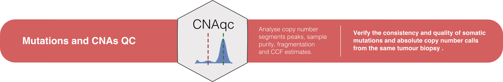
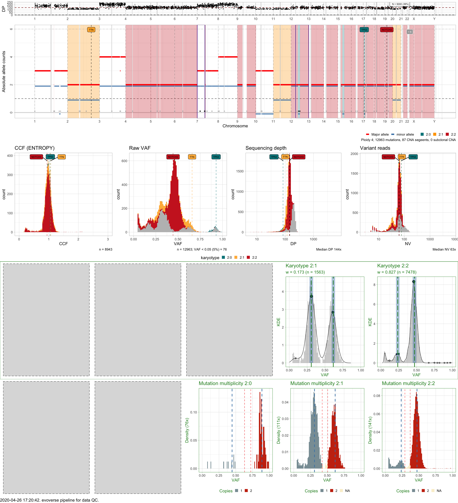

Main function: `pipeline_qc_copynumbercalls.
The following data are required to run this pipeline.
mutations;cna;purity;description;smooth;matching_epsilon_peaks;CCF_computation;The following steps are performed by pipeline_qc_copynumbercalls.
input mutations are mapped to copy number segments, integrating also tumour purity using CNAqc; if required input segments are smoothed.
peak-detection is used to determine the quality of each karyotype, with a QC "PASS" or "FAIL" assessment;
CCFs are computed, with a QC "PASS" or "FAIL" assessment per karyotype;
Arm-level fragmentation is used to determine chromosome arms that seem to have an excess of small fragments;
On output table is computed to report QC results from all data.
# Use example data in the CNAqc package
data(example_dataset_CNAqc, package = 'CNAqc')
pipeline = pipeline_qc_copynumbercalls(
mutations = CNAqc::example_dataset_CNAqc$snvs, # Somatic mutations
cna = CNAqc::example_dataset_CNAqc$cna, # Copy number segments
purity = CNAqc::example_dataset_CNAqc$purity, # Sample purity
reference = 'GRCh38', # Genome reference
description = "Example dataset for QC", # Dataset description
smooth = TRUE, # Smooth copy number segments
matching_epsilon_peaks = 0.025, # Peak-detection parameters
ccf_method = 'ENTROPY' # CCF computation
)
#> [ Evoverse ~ Pipeline to QC somatic mutations and CNA segments ]
#>
#> ── Creating input object (smoothing TRUE) for sample Example dataset for QC ─────────────────────────────
#>
#> ── Preparing input for deconvolution ────────────────────────────────────────────────────────────────────
#>
#> [ CNAqc - CNA Quality Check ]
#> ℹ Using reference genome coordinates for: GRCh38.
#> ℹ Drivers are annotated, but 'gene' column is missing, using mutation location.
#> ! Missing CCF column from CNA calls, adding CCF = 1 assuming clonal CNA calls.
#> ℹ Input n = 13141 mutations for 267 CNA segments (267 clonal, 0 subclonal)
#> x n = 178 mutations cannot be mapped to segments and will be removed.
#> ✓ Mapped n = 12963 mutations to clonal segments (100% of input)
#> ── [ CNAqc ] n = 12963 mutations in 267 segments (267 clonal + 0 subclonal). Genome reference: GRCh38. ─
#>
#> 2:2 [n = 7478] ■■■■■■■■■■■■■■■■■■■■■■■■■■■ { chr19:15292495:15292496:G:A }
#> 4:2 [n = 1893] ■■■■■■■
#> 3:2 [n = 1625] ■■■■■■
#> 2:1 [n = 1563] ■■■■■■ { chr2:179431633:179431634:C:T }
#> 3:0 [n = 312] ■
#> ℹ Sample Purity: 89% ~ Ploidy: 4.
#> ℹ Mutations annotated have 3 drivers.
#> ℹ Smoothing chr1: 37 segments.
#> [1-24] [27-30] [31-33] [34-37]
#> ℹ Smoothing chr10: 8 segments.
#> [1-2] [3-4] [5-8]
#> ℹ Smoothing chr11: 22 segments.
#> [1-7] [8-9] [10-22]
#> ℹ Smoothing chr12: 13 segments.
#> [2-3] [12-13]
#> ℹ Smoothing chr14: 2 segments.
#> [1-2]
#> ℹ Smoothing chr15: 9 segments.
#> [1-5] [7-9]
#> ℹ Smoothing chr16: 10 segments.
#> [1-6] [8-10]
#> ℹ Smoothing chr17: 10 segments.
#> [4-5] [6-7] [8-10]
#> ℹ Smoothing chr18: 8 segments.
#> [1-2] [3-8]
#> ℹ Smoothing chr19: 5 segments.
#> [2-5]
#> ℹ Smoothing chr2: 18 segments.
#> [1-8] [10-12] [14-18]
#> ℹ Smoothing chr20: 9 segments.
#> [1-3] [4-9]
#> ℹ Smoothing chr21: 2 segments.
#> [1-2]
#> ℹ Smoothing chr22: 3 segments.
#> ℹ Smoothing chr3: 19 segments.
#> [1-7] [8-13] [15-19]
#> ℹ Smoothing chr4: 8 segments.
#> [1-4] [5-8]
#> ℹ Smoothing chr5: 6 segments.
#> [1-2] [3-5]
#> ℹ Smoothing chr6: 4 segments.
#> [1-2] [3-4]
#> ℹ Smoothing chr7: 46 segments.
#> [1-5] [9-27] [36-38] [39-41] [43-46]
#> ℹ Smoothing chr8: 18 segments.
#> [1-4] [5-11] [12-18]
#> ℹ Smoothing chr9: 3 segments.
#> [1-2]
#> ℹ Smoothing chrX: 6 segments.
#> [1-2] [3-6]
#> ✓ Smoothed from 267 to 87 segments with 1e+06 gap ...
#> ℹ Creating a new CNAqc object. The old object will be retained in the $before_smoothing field.
#> [ CNAqc - CNA Quality Check ]
#> ℹ Using reference genome coordinates for: GRCh38.
#> ℹ Input n = 12963 mutations for 87 CNA segments (87 clonal, 0 subclonal)
#> Warning in map_mutations_to_segments(snvs, cna %>% filter(CCF == 1)): [CNAqc] a
#> karyotype column is present in CNA calls, and will be overwritten
#> ✓ Mapped n = 12963 mutations to clonal segments (100% of input)
#>
#> ── Purity/ ploidy QC via peak detection ─────────────────────────────────────────────────────────────────
#> ℹ Requested karyotypes 1:0, 1:1, 2:0, 2:1 and 2:2.
#> ℹ Found n = 9041 mutations in 2:2, 2:1 (skipping those with n < 648 mutations).
#> # A tibble: 4 x 12
#> mutation_multip… karyotype peak x y counts_per_bin discarded offset
#> <dbl> <chr> <dbl> <dbl> <dbl> <int> <lgl> <dbl>
#> 1 2 2:1 0.616 0.61 2.84 50 FALSE 0.00592
#> 2 1 2:1 0.308 0.31 3.73 65 FALSE -0.00204
#> 3 2 2:2 0.471 0.46 8.31 668 FALSE 0.0109
#> 4 1 2:2 0.235 0.25 0.92 84 FALSE -0.0146
#> # … with 4 more variables: matched <lgl>, weight <dbl>, score <dbl>, QC <chr>
#> ✓ Peak detection PASS with r = -0.00117483319779741 and tolerance e = 0.05
#>
#> ── CCF estimation and QC ────────────────────────────────────────────────────────────────────────────────
#> ── Computing mutation multiplicity for karyotype 2:0 using the entropy method. ──────────────────────────
#> ℹ Expected Binomial peak(s) for these calls (1 and 2 copies): 0.445 and 0.89
#> ℹ Mixing pre/ post aneuploidy: 0.09 and 0.91
#> ℹ Not assignamble area: [0.631578947368421; 0.723684210526316]
#> ── Computing mutation multiplicity for karyotype 2:1 using the entropy method. ──────────────────────────
#> ℹ Expected Binomial peak(s) for these calls (1 and 2 copies): 0.307958477508651 and 0.615916955017301
#> ℹ Mixing pre/ post aneuploidy: 0.55 and 0.45
#> ℹ Not assignamble area: [0.423423423423423; 0.504504504504504]
#> ── Computing mutation multiplicity for karyotype 2:2 using the entropy method. ──────────────────────────
#> ℹ Expected Binomial peak(s) for these calls (1 and 2 copies): 0.235449735449735 and 0.470899470899471
#> ℹ Mixing pre/ post aneuploidy: 0.09 and 0.91
#> ℹ Not assignamble area: [0.290780141843972; 0.368794326241135]
#>
#> ── Detecting patterns of overfragmentation ──────────────────────────────────────────────────────────────
#> ℹ One-tailed Binomial test: 2 tests, alpha 0.01. Short segments: 0.2% of the reference arm.
#> ✓ chr7p, p = 4.52608e-06 ~ 12 segments, 10 short.
#> ✓ chr12q, p = 9.21599999999998e-07 ~ 11 segments, 10 short.
#> ℹ 2 significantly overfragmented chromosome arms (alpha level 0.01).A special S3 output object is used to store results from this pipeline; the object implements methods for print and plot.
# S3 object
class(pipeline)
#> [1] "evopipe_qc"
# Summary of the results
print(pipeline)
#> ── [ Evoverse ] Example dataset for QC QC pipeline ──────────────────────────────────────────────────────
#> ── [ CNAqc ] n = 12963 mutations in 87 segments (87 clonal + 0 subclonal). Genome reference: GRCh38. ───
#>
#> 2:2 [n = 7478] ■■■■■■■■■■■■■■■■■■■■■■■■■■■ { chr19:15292495:15292496:G:A }
#> 4:2 [n = 1893] ■■■■■■■
#> 3:2 [n = 1625] ■■■■■■
#> 2:1 [n = 1563] ■■■■■■ { chr2:179431633:179431634:C:T }
#> 3:0 [n = 312] ■
#> ℹ Sample Purity: 89% ~ Ploidy: 4.
#> ℹ Mutations annotated have 3 drivers.
#> ✓ QC via peak detection available, score: -0.00117483319779741.
#> # A tibble: 4 x 12
#> mutation_multip… karyotype peak x y counts_per_bin discarded offset
#> <dbl> <chr> <dbl> <dbl> <dbl> <int> <lgl> <dbl>
#> 1 2 2:1 0.616 0.61 2.84 50 FALSE 0.00592
#> 2 1 2:1 0.308 0.31 3.73 65 FALSE -0.00204
#> 3 2 2:2 0.471 0.46 8.31 668 FALSE 0.0109
#> 4 1 2:2 0.235 0.25 0.92 84 FALSE -0.0146
#> # … with 4 more variables: matched <lgl>, weight <dbl>, score <dbl>, QC <chr>
#> ✓ Cancer Cell Fraction (CCF) data available for karyotypes: 2:0, 2:1 and 2:2.
#> ✓ These segments are smoothed; before smoothing there were 267 segments.
#> ✓ Arm-level fragmentation analysis: 2 segments overfragmented.
#> ── QC PASS ────────────────────────────────────────────────────────────────────── PASS rate (%): 100 ──
#> # A tibble: 5 x 3
#> karyotype QC type
#> <chr> <chr> <chr>
#> 1 2:1 PASS Peaks
#> 2 2:2 PASS Peaks
#> 3 2:0 PASS CCF
#> 4 2:1 PASS CCF
#> 5 2:2 PASS CCFThe fields pipeline$cnaqc is the CNAqc object computed by the pipeline; it contains CCF, peaks analysis etc. and can be accessed with the methods of the package.
# CNAqc object
print(pipeline$cnaqc)
#> ── [ CNAqc ] n = 12963 mutations in 87 segments (87 clonal + 0 subclonal). Genome reference: GRCh38. ───
#>
#> 2:2 [n = 7478] ■■■■■■■■■■■■■■■■■■■■■■■■■■■ { chr19:15292495:15292496:G:A }
#> 4:2 [n = 1893] ■■■■■■■
#> 3:2 [n = 1625] ■■■■■■
#> 2:1 [n = 1563] ■■■■■■ { chr2:179431633:179431634:C:T }
#> 3:0 [n = 312] ■
#> ℹ Sample Purity: 89% ~ Ploidy: 4.
#> ℹ Mutations annotated have 3 drivers.
#> ✓ QC via peak detection available, score: -0.00117483319779741.
#> # A tibble: 4 x 12
#> mutation_multip… karyotype peak x y counts_per_bin discarded offset
#> <dbl> <chr> <dbl> <dbl> <dbl> <int> <lgl> <dbl>
#> 1 2 2:1 0.616 0.61 2.84 50 FALSE 0.00592
#> 2 1 2:1 0.308 0.31 3.73 65 FALSE -0.00204
#> 3 2 2:2 0.471 0.46 8.31 668 FALSE 0.0109
#> 4 1 2:2 0.235 0.25 0.92 84 FALSE -0.0146
#> # … with 4 more variables: matched <lgl>, weight <dbl>, score <dbl>, QC <chr>
#> ✓ Cancer Cell Fraction (CCF) data available for karyotypes: 2:0, 2:1 and 2:2.
#> ✓ These segments are smoothed; before smoothing there were 267 segments.
#> ✓ Arm-level fragmentation analysis: 2 segments overfragmented.A summary QC table of the pipeline can be accessed; scores f_PASS and NA_test are percentages of tests that have achieved QC "PASS", and tests that could not be computed (because of constraints of parameters, or missing data etc.)
print(pipeline$QC)
#> $QC_table
#> # A tibble: 10 x 3
#> karyotype QC type
#> <chr> <chr> <chr>
#> 1 1:0 <NA> Peaks
#> 2 1:1 <NA> Peaks
#> 3 2:0 <NA> Peaks
#> 4 2:1 PASS Peaks
#> 5 2:2 PASS Peaks
#> 6 1:0 <NA> CCF
#> 7 1:1 <NA> CCF
#> 8 2:0 PASS CCF
#> 9 2:1 PASS CCF
#> 10 2:2 PASS CCF
#>
#> $f_PASS
#> [1] 100
#>
#> $NA_tests
#> [1] 50And a multi-panel figure is assembled by the S3 plot method, wich reports (by row) CNA segments and genome-wide depth of sequencing, CCF and raw data histograms, results from peak-detection and a strip plot of mutation multiplicity estimates that are used to compute CCFs.
plot(pipeline)
#> Warning: Removed 6 rows containing missing values (geom_bar).
#> Warning: Removed 6 rows containing missing values (geom_bar).
#> Warning: Removed 8 rows containing missing values (geom_bar).